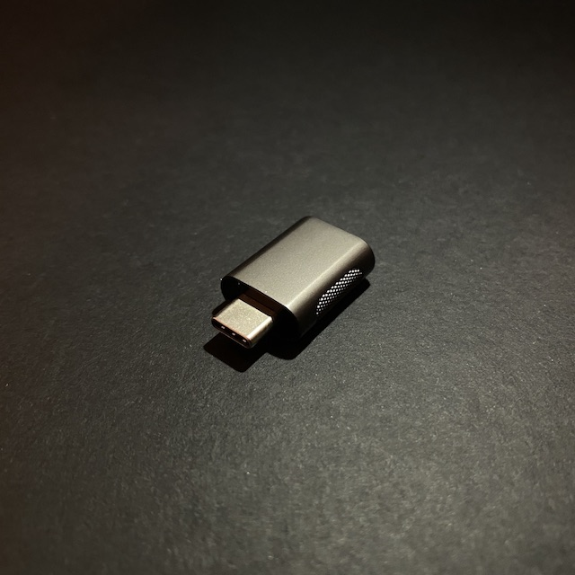

Nonda USB-C to USB-A Adapter Review
Introduction
As the Mac has only USB-C ports, for using USB-A accessories must be difficult right? Wrong! We picked up this 2 pack of USB-A to USB-C adapter from an unknown brand off Amazon, nonda.
.jpg)
- We purchased this nonda adapter as it was on offer on Amazon for around £8.50 for 2 in the space grey colour. Our main purpose in buying this adapter is for accessories such as memory sticks or wired mouse to connect to USB-C only laptops such as the Dell XPS or Apple’s MacBook Range.
- When receiving this product, it came in a paper box. Nothing special but it was securely held in a plastic mould and some paper work if you weren’t happy with the product you could get it returned/warranty papers.
- Once holding this adapter in hand, it was quite weighty with a premium aluminium feel similar to the MacBook. Even though it was specified as space grey, the colour is darker than the MacBook space grey colour, doesn’t affect performance but aesthetically, its a couple of shades off.
- The metal encased adapter was a simple as plug in and play. No extra drivers were needed for this product to work and the length of the product isn’t long so it’s not sticking out like a sore thumb and potentially hitting it whilst walking next to it and breaking the adapter or worse, your USB-A male end.
- One of the issues whilst using the product is that it’s quite wide. This is an issue is you only use one of these adapters if you have 2 USB-C ports on one side or have a thick USB-C cable next to this adapter. Bare this in mind if you want to use this side by side, you can’t!
- This model we purchased has no branding on either adapters which we love as it makes it look simple and elegant. However there’s a model with small indicator LED and a version with a small built cable, these both have nonda’s branding on it (both sold individually at a higher price per adapter).
- At £4.25 a piece and keeping the other as a spare, we recommend this is as a great alternative to dongles and works great if you have 1 accessories to plug into your USB-C ready device.